Copyright (C) 2021 Intel Corporation SPDX-License-Identifier: BSD-3-Clause See: https://spdx.org/licenses/
Quadratic Unconstrained Binary Optimization (QUBO) with Lava
This tutorial ramps up users who want to use Lava’s solver for quadratic unconstraint binary optimization (QUBO) problems. It starts with an intuitive description of the algorithm behind the solver, before it explains how to generally encode and solve arbitrary QUBO workloads on CPU and Loihi2. As example application, we will apply the solver to search for the the maximum independent set of a graph. An outlook will finally give a glimpse into the future features of the Lava solver that will be enabled in later software releases.
In a future release, this tutorial will also provide guidance to benchmark between Loihi1, Loihi2, and CPU-based state-of-the-art solvers. Benchmarking metrics will include the solution accuracy, run time, and energy consumption.
Recommended tutorials before starting
Set up the environment
To solve QUBOs on Loihi2, we import the corresponding modules from Lava.
[1]:
# Interface for QUBO problems
from lava.lib.optimization.problems.problems import QUBO
# Generic optimization solver
from lava.lib.optimization.solvers.generic.solver import OptimizationSolver, solve
In addition, we import auxiliary modules to generate the workloads and run the solver.
[2]:
import os
import numpy as np
If Loihi 2 hardware is available, we can take advantage of the large speed and energy efficiency of this chip to solve QUBOs. To access the chip, we must configure the following environment variables.
[3]:
# Enable SLURM, the workload manager used to distribute Loihi2 resources to users
os.environ['SLURM'] = '1'
# Define the Loihi2 boards used to run the workload
os.environ["LOIHI_GEN"] = "N3B3"
os.environ["PARTITION"] = "kp_stack"
An intuitive description of Lava’s QUBO solver
In previous work, we found that our first generation Loihi 1 chip can solve QUBOs more than 17x faster and more than 670x more energie efficient than the CPU-based solver QBSolv. This solver was developed by DWave Systems and, according to their benchmarking, “executes in two-thirds of the time of the best previously known implementation” [1].
Our Lava solver translates this solver to Loihi 2 to exploit this chip’s higher speed, efficiency, and new hardware features designed for optimization.
The QUBO formalism
A quadratic unconstrained binary optimization (QUBO) task is an NP-hard combinatorial optimization problem with a range of industrial applications. Its goal is to minimize the cost function
$:nbsphinx-math:underset{x}{text{min}}; \mathbf{x}`^T :nbsphinx-math:mathbf{Q}` \mathbf{x} $ ,
which is subject to no constraints. This equation is defined by the QUBO matrix 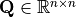 and the vector of binary variables, 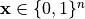 .
Lava’s QUBO solver
To solve QUBOs, Lava currently implements a spiking version of a Boltzmann machine that was inspired by the work of Jonke et al. [2]. A detailed algorithmic description of the solver will be published soon.
To give a rough intuition of the solver, it represents binary variables as neurons that either spike (variable value=1) or are silent (value=0).

Each neuron has an internal state representing the probability that the neuron should spike. When the state exceeds a threshold, the neuron spikes and the variable is thus switched to 1. Once a spike occurs at neuron  , the synapses forward the spikes according to the off-diagonal QUBO weights 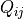 to other neurons
, the synapses forward the spikes according to the off-diagonal QUBO weights 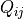 to other neurons  . Negative weights increase the chance that the connected neuron will spike, positive weights decrease the chance. On-diagonal weights 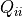 add a
bias to the neurons state variable, which continuously increases the chance that the neuron will spike.
. Negative weights increase the chance that the connected neuron will spike, positive weights decrease the chance. On-diagonal weights 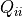 add a
bias to the neurons state variable, which continuously increases the chance that the neuron will spike.

A quick start to solving QUBOs on Loihi 2
Solving the QUBO in Lava involves three steps:
Define the QUBO workload.
Provide a set of hyperparameters.
Call the Lava solver.
The following code will solve the toy QUBO defined by
$:nbsphinx-math:underset{x}{text{min}}; :nbsphinx-math:`mathbf{x}`^T
\mathbf{x} $ .
Define a QUBO workload
Lava provides an easy interface to encode QUBO problems, by providing the QUBO matrix. Once encoded, the problem is provided to Lava’s OptimizationSolver, a generic solver for constraint optimization problems.
[4]:
# Define the QUBO matrix
q = np.asarray([[-5, 2, 4, 0],
[2, -3, 1, 0],
[4, 1, -8, 5],
[0, 0, 5, -6]])
# Instantiate the QUBO problem
qubo_problem = QUBO(q=q)
# Instantiate a constraint optimization solver for this workload
solver = OptimizationSolver(qubo_problem)
Provide a set of hyperparameters
The solution quality and run time of Lava’s solver depends on a good choice of hyperparameters. This choice depends on the specific type of problem. While the hyperparameter tuning is currently a manual task, future releases will provide utilities for its automation.
Lava’s optimization solver supports four hyperparameters:
Hyperparameter |
Data type |
Allowed range |
Meaning |
|---|---|---|---|
var_comm_rate |
int |
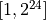 |
Number of time steps it requires a neuron to fire in the absence of noise. |
noise_amplitude |
int |
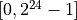 |
Multiplicative factor to upscale the stochastic noise in the network. |
step_size |
int |
Value added in each time step to the state variable. |
|
init_value |
Array[binary] |
{0, 1} |
Vector providing an initial guess for the solution. |
The hyperparamaters are provided to the solver as dictionary.
[5]:
hyperparameters = {
"steps_to_fire": 8,
"noise_amplitude": 4,
"step_size": 1,
"init_value": np.zeros(4, )
}
Solve the QUBO on a CPU or Loihi 2
A call to the solve method of Lava’s optimization solver then tackles the provided workload. Note that the call defines a CPU as backend to run the solver.
When running on a CPU backend, Lava’s solver mimics the algorithm developed for Loihi 2 at default. In future releases, Lava will also allow to run external state-of-the-art CPU-based algorithms for comparison.
As stopping condition, you can provide the solver with a maximum number of time steps (timeout) and/or a target cost. In many cases, the user will not know the target cost and thus choose a maximum number of time steps. Providing a target cost is more useful if the user knows a cost that would be acceptable for the specific application. These two options will be extended in the future by more advanced stopping criteria, such as convergence.
Lava will print an obtained solution whenever it found a local minimum. Then it continues its search until either stopping condition is fullfilled.
If your system has physical access to a Loihi2 chip, you can easily run the the QUBO solver on Loihi2. For this, just change the the backend parameter in the following cell as indicated.
While the CPU implementation closely mimics the Loihi2 implementation, the solutions may differ. This is due to slightly different noise models.
[6]:
# Solve the QUBO using Lava's OptimizationSolver on CPU
# Change "backend='Loihi2'" if your system has physical access to this chip
solution = solver.solve(timeout=10000,
target_cost=-11.0,
hyperparameters=hyperparameters,
backend='CPU')
# Calculate the cost of the obtained solution
cost = solution.T @ q @ solution
print(f'\nSolution of the provided QUBO: {solution}\n'
f'QUBO cost of solution: {cost} (Lava) vs {-11.0} (optimal)\n')
/home/sshresth/lava-nc/lava/src/lava/magma/compiler/compiler_graphs.py:862: UserWarning: Cannot import module '<module 'solver' from '/home/sshresth/lava-nc/lava-optimization/src/lava/lib/optimization/solvers/generic/solver.py'>' when searching ProcessModels for Process 'StochasticIntegrateAndFire'.
warnings.warn(
Found a solution with cost: -4
Found a solution with cost: -6
Host: received a better solution: [0 0 0 1] at step 6
Found a solution with cost: -9
Host: received a better solution: [0 1 0 1] at step 11
Found a solution with cost: -11
Host: received a better solution: [1 0 0 1] at step 53
Host: LMT notified network reached target cost: -11
Host: LMT notified network reached target cost: -11
Host: stopping simulation at step: 53
Solution of the provided QUBO: [1. 0. 0. 1.]
QUBO cost of solution: -11.0 (Lava) vs -11.0 (optimal)
Maximum Independent Sets as example application
To illustrate how the QUBO solver can solve optimization tasks, this tutorial determines maximum independent sets, an NP-hard task from graph theory. The goal of this task is to find the largest subset of vertices in a graph that are mutually unconnected. In the following graph, the purple nodes form such a set:

The QUBO formulation
As a first step, the MIS problem needs to be translated into a QUBO formulation. Finding the MIS for a graph G=(V, E) with vertices V and edges E can be formulated as a QUBO problem, where we need to optimize the problem
$:nbsphinx-math:underset{x}{text{min}}; \mathbf{x}`^T :nbsphinx-math:mathbf{Q}` \mathbf{x} $ ,
where the variables denote
 .
.
The off-diagonal elements of the QUBO matrix are equivalent to each other, and the same applies to on-diagonal elements,
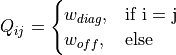 .
Thus, the problem can be expressed as
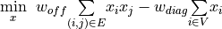 .
The solution to this problem is equivalent to the MIS if the off-diagonal weights 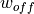 and on-diagonal entries 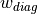 fulfill
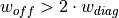 .
Utility functions
To create and analyze MIS workloads, we define utility functions in order to
create random graphs.
translate the MIS task into its QUBO formulation.
analyze the solution of a given solution to the QUBO problem.
[7]:
class MISUtils():
@staticmethod
def get_random_graph(n_vert, p_edge, seed=6659):
"""Creates an undirected graph with random connectivity between nodes.
Parameters
----------
n_vert : int
Number of vertices in the graph
p_edge: float
Random probability [0, 1] that two vertices are connected
seed: int
Seed for random number calculator
Returns
-------
adj : Array[binary]
Adjacency matrix
"""
np.random.seed(seed)
# generate a random binary matrix of size n_vert x n_vert
adj = (np.random.rand(n_vert,n_vert) < p_edge).astype(int)
# delete diagonal elements as nodes have no self-connectivity
adj = np.triu(adj)
# ensure that the matrix is symmetric
adj += adj.T - 2*np.diag(adj.diagonal())
return adj
@staticmethod
def translate_adj_to_mis_qubo(adj, w_diag, w_off):
"""Creates a QUBO describing the maximum independent set problem
based on the adjacency matrix of a graph.
The goal of the QUBO is to minimize the term
min x^T * Q * x ,
where the vector
x_i = 1 if vertex i is part of the MIs
x_i = 0 if vertex i is not part of the MIS,
and the QUBO matrix is given by
Q_ii = w_diag
Q_ij = w_off (for i~=j) .
Parameters
----------
adj : Array[binary]
Adjacency matrix
w_diag: float
Weights of diagonal elements of Q.
w_off: int
Weights of off-diagonal elements of Q
Returns
-------
Q : Array[float, float]
2D QUBO matrix.
"""
if w_off <= 2 * w_diag:
raise ValueError("Off-diagonal weights must be > 2 x diagonal weights.")
# Translate the connectivity matrix to a QUBO matrix
Q = - w_diag * np.eye(adj.shape[0]) + w_off/2 * adj
return Q
@staticmethod
def get_total_cost(x_solution, q):
"""Based on a given solution, returns the value of the cost function.
Parameters
----------
x_solution : Array[binary]
Vector of length equal to the number of vertices in the graph.
The ith entry of the vector determines if the ith vertex is a
member of the MIS.
q: Array[float, float]
2D QUBO matrix.
Returns
-------
float
Cost of the given solution.
"""
return (solution.T @ q @ solution)
Define and solve the QUBO workload
We now define a random graph with 45 nodes and a propability of 0.5 that two random notes are connected. The task to find the maximum independent set within the graph is then translated into a QUBO formulation and encoded in Lava.
[8]:
# Create the connectivity matrix for a random graph
adj = MISUtils.get_random_graph(n_vert=45, p_edge=0.5, seed=7865)
# Translate the connectivity matrix to a QUBO matrix
q = MISUtils.translate_adj_to_mis_qubo(adj, w_diag=1, w_off=4)
# Instantiate the QUBO problem
qubo_problem = QUBO(q=q)
# Instantiate a constraint optimization solver for this workload
solver = OptimizationSolver(qubo_problem)
A call to the solve method of Lava’s optimization solver then solves the provided workload on CPU.
As noted above, you can change the backend to ‘Loihi2’ and run the solver on this neuromorphic hardware, as long as physical access is available.
[9]:
# Define hyperparameters for the solver
hyperparameters = {
"steps_to_fire": 8,
"noise_amplitude": 4,
"step_size": 1,
}
# Solve the QUBO using Lava's OptimizationSolver on CPU
# Change "backend='Loihi2'" if your system has physical access to this chip
solution = solver.solve(timeout=10000,
target_cost=-7,
hyperparameters=hyperparameters,
backend='CPU')
# Calculate the cost of the obtained solution
cost = MISUtils.get_total_cost(x_solution=solution, q=q)
print(f'\nNodes in maximum independent set (index starts at 0): {np.where(solution)[0]}\n'
f'QUBO cost of solution: {cost} (Lava) vs {-7.0} (optimal)\n')
Found a solution with cost: -1
Host: received a better solution: [0 0 0 0 0 0 0 0 0 0 0 0 0 0 0 1 0 0 0 0 0 0 0 0 0 0 0 0 0 0 0 0 0 0 0 0 0
0 0 0 0 0 0 0 0] at step 9
Found a solution with cost: -2
Host: received a better solution: [0 0 0 1 0 0 0 0 0 0 0 0 0 0 0 0 0 0 0 0 0 0 0 0 0 0 0 0 0 0 0 0 0 0 0 0 0
1 0 0 0 0 0 0 0] at step 14
Found a solution with cost: -3
Host: received a better solution: [0 0 0 0 0 0 0 0 0 0 0 1 1 0 0 0 0 0 0 0 0 0 0 0 0 0 0 0 0 0 0 0 0 0 0 0 0
0 0 0 1 0 0 0 0] at step 46
Found a solution with cost: -4
Host: received a better solution: [0 0 0 0 0 1 0 0 0 0 1 0 0 0 0 1 0 0 0 0 0 0 0 0 0 0 0 0 0 0 0 0 0 0 0 0 0
1 0 0 0 0 0 0 0] at step 201
Found a solution with cost: -5
Host: received a better solution: [0 0 0 0 0 0 0 0 0 1 0 0 1 0 0 0 0 0 0 0 0 0 0 0 0 0 0 1 0 0 0 0 0 0 1 0 0
0 0 0 0 0 0 1 0] at step 524
Found a solution with cost: -7
Host: received a better solution: [0 0 0 0 0 1 0 0 0 1 1 0 0 0 0 1 0 0 0 0 0 0 0 0 0 0 0 1 0 0 1 0 0 0 0 0 0
1 0 0 0 0 0 0 0] at step 3488
Host: LMT notified network reached target cost: -7
Host: LMT notified network reached target cost: -7
Host: stopping simulation at step: 3488
Nodes in maximum independent set (index starts at 0): [ 5 9 10 15 27 30 37]
QUBO cost of solution: -7.0 (Lava) vs -7.0 (optimal)
Future features
Please note that the Lava solver is currently an early proof of concept to validate the promises of neuromorphic hardware for optimization. Future releases are expected to provide the following advancements and many more: - Improved solver performance, e.g., by stochastic noise levels that progressively decrease. - New solver algorithms in Lava, like simulated annealing, that exploit the general-purpose programmable neurons available in Loihi2. - Higher compilation speed. While neuromorphic hardware is fast at solving optimization problems, the time it takes to write the problem to Loihi will be substantially accelerated in the near term. - Added compiler support for larger problem sizes. - Automatic hyperparameter tuning. - More stopping criteria besides a target cost and solver iterations, such as convergence of the solver. - Utilities that allow an easy benchmarking between Loihi1, Loihi2, and CPU-based state-of-the-art solvers. Benchmarking metrics will include solution accuracy, speed, and energy efficiency. - Support for Loihi1.
How to learn more?
Watch this space to learn about upcoming developments to the QUBO solver and the optimization toolbox in Lava in general.
If you want to find out more about the implementation of the QP solver, have a look at the Lava documentation or dive into the source code. To receive regular updates on the latest developments and releases of the Lava Software Framework please subscribe to the INRC newsletter.
References
[1] D-Wave Systems Inc: Booth, Reinhardt, Roy, Partitioning Optimization Problems for Hybrid Classical/Quantum Execution. Technical report, 2017. [2] Jonke, Z., Habenschuss, S., and Maass, W. (2016). Solving constraint satisfaction problems with networks of spiking neurons. Front. Neurosci. 10:118. doi: 10.3389/fnins.2016.00118